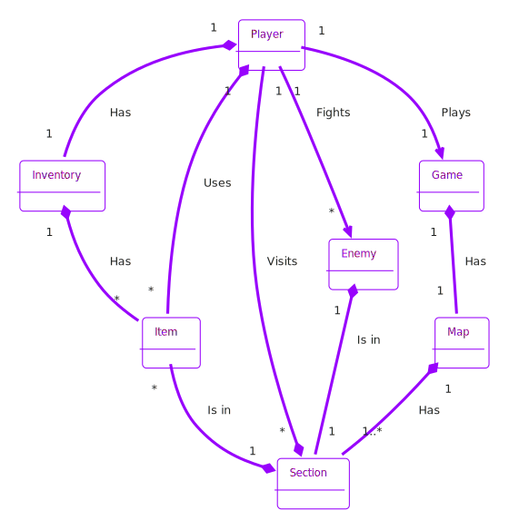
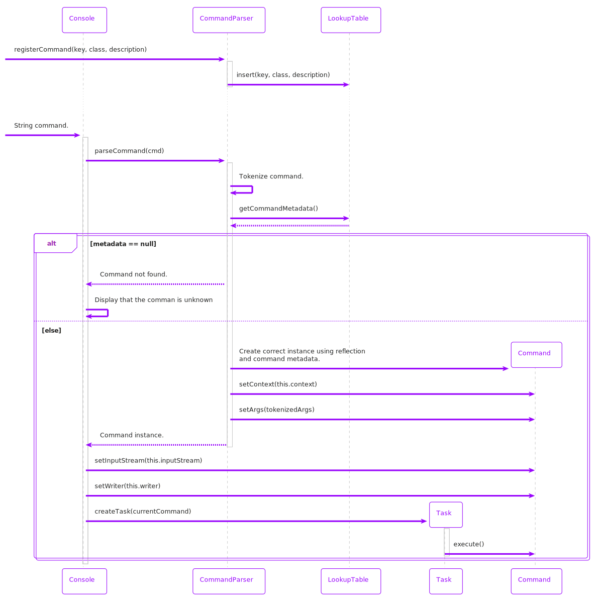

Introduction
Text Adventure is a text-based RPG set in a fantasy world. You will be the hero of our story, are you ready for this exciting adventure?
Game Plot
In a distant era, in the lands of Margorgh, in the darkest depths of a shadowy forest, it is said that
there exists a Castle ruled by the forces of evil, housing an unimaginable power.
For countless millennia, humanity has sought to wrest this power from the forces of evil; battles and
wars have marked the quest for this power.
Over time, the traces of the Castle and the power within have been lost, vanished like leaves on trees
in winter, or at least, so it was believed...
A mysterious scroll was discovered by a warrior with a golden heart, a scroll containing knowledge that
he could not have imagined and that would lead him to an unbelievable destiny....
Specifications
To consult the project's user stories, check here ↗
Javadoc
To consult the project's javadoc, check here ↗
Manual
Gameplay
The game is set in two different levels, located respectively in a forest and in a castle.
It is subdivided into various sections (that we will call "rooms" from now on) with at first only one is
available to access
In these rooms, you will find contexts in which you have to defeat a monster, pick items and search for
keys in order to "unlock" all of them.
At the first launch of the game, the program will load the main menu, where you can choose between:
- starting a new game
- loading a pre-existing game (if existing)
- deleting a pre-existing game (if existing)
- seeing a list of the pre-saved games
At any moment of the game you can:
- use the command
helpto request the list of the available commands. - use the command
saveto save your current progress in locale on your computer
Warning! The game will not automatically save the progress!
If you want to save on cloud you must set up your own bucket environment!
The main goal of the game is to complete all the rooms, reach the castle and beat the final boss!
Graphic Interface
For the GUI it has been used JavaFX FXML, with which you can implement the graphics of a desktop application. The graphic interface is composed in three main parts:
- an "artistic" section, where there is an image/video (created and rendered with the program Blender) which represents the content of that specific room
- an output section, where you can see the program's response
- an input section, with which you can interact with the game
How To Play
The user interact with the display using a custom command line, which is located at the bottom of
the game window.
The user have to type the command followed by (if any) arguments and then press Enter to
trigger the specific in-game action.
Example:
>>command <argument>
The complete list of all the possible commands is available here ↗
Word completion feature
It has been implemented a personalized word-completion feature which, alongside with the command help,
it has the purpose
to improve the end user experience. Here are two main scenarios:
-
You haven't started typing your command or argument yet.
Tab ↹/Shift+Tabwill visualize the list of all the possible option at that moment.
-
You have already started typing the first letters of your command or argument.
Tab ↹/Shift+Tabwill visualize the list of the options based on what you already typed.
In both cases, keep pressing on the on Tab ↹ or Shift+Tab until you find
the command or the argument needed.
Then, press Enter or space (if you need arguments) to select it.
Commands List
| Name | Argument | Description |
|---|---|---|
newGame |
- | Create a new game. It can be utilized only in the menu. |
loadGame |
Name of the saved game | Command for loading a game previously saved. |
deleteGame |
Name of the save to be deleted | Command for deleting a previously saved game. Enter the name of the game to be deleted |
listGames |
- | Command that showing a list of the saved games. |
save |
(Optional) name of the save | Command for save the current game. Require a name for the game that you are saving. |
move |
Cardinal directions:north / south / east / west
|
Command manage the movement in the map using cardinal directions. If possible you move in the digit direction |
wai |
- | Command for showing the properties (locked/unlocked) of directions that can be used with move
|
show |
(Optional) one between inventory / stats |
Command for showing the stats and inventory of the player.show inventory for
showing only the player's inventory.show stats the showing only the player's stats.
|
look |
- | Command for showing a list of the items in the room. |
pick |
Name of the item to be taken | Command for taking an item from the items present in the room Return error message if the inventory has not enough space. |
drop |
Name of the item to be dropped |
Command for dropping an item from the items present in the inventory |
fight |
- | Command for starting a battle with a hostile mob (enemy). |
attack |
- | Command for attacking a monster in a fight. |
dodge |
- | Command for dodging an incoming attack from a monster. It can be used 3 times per fight. |
run |
- |
Escape from the fight and leave the monster with his current hp and damage. You will be able to rejoin the fight using the command fight.
|
use |
Name of the item to be used in the inventory | Command for using an item in the player's inventory. |
help |
- | Show all the possible commands in a precise moment of the game. |
clear |
- | Command for cleaning the game terminal. |
How To Install
Maven
-
Clone the repository
If not installed, install GIT using this guide
Once installed, from the terminal move to the folder where you want the repository to be cloned and rungit clone https://github.com/ssiodev/text_adventure.git
-
Install Maven
Maven version
3.9.7doesn't work with this project
Maven version3.9.6, 3.8.8, 4.0.0has been tested
If not already installed, follow this guide to install Maven.
A useful guide to install and set environment variables on Windows, on Ubuntu, on Mac
-
Install JDK20
Check if in the system is already installed JDK20 by running on the terminal
java --version
If JDK20 is not installed use this page to download the right package or installer.
For any issue, follow this guide. -
Create
application.configIn the folder
text_adventure > src > main > resourcescreate a new file calledapplication.conf
Open the filetext_adventure > src > main > resources > copy_application.conf
and copy its content insideapplication.config
-
Bucket info setup
In the file
application.configcomplete these fields
storage.aws.key=
storage.aws.secret=
storage.aws.bucket.name=
storage.aws.region=
with the values of
bucket public key
bucket private key
bucket name
bucket region
-
Build the project
On the terminal, move to the folder
text_adventure(the repository previously cloned). Then run
mvn package
IntelliJ IDEA
-
Install Intellij
To install Intellij firstly install JetBrains Toolbox App from this link.
Once Toolbox is installed, run it and install Intellij Community (or Intellij Ultimate if holder of a valid license) -
Clone the repository
If not installed, install GIT using this guide
Once installed, from the terminal move to the folder where you want the repository to be cloned and rungit clone https://github.com/ssiodev/text_adventure.git
-
Install JDK20
Check if in the system is already installed JDK20 by running on the terminal
java --version
If JDK20 is not installed use this page to download the right package or installer.
For any issue, follow this guide. -
Open the repository
Launch Intellij IDEA and click on "Open...". Then select the repository previously cloned.
If somewhere in the interface appears the error messageJDK "20" is missingthen click on Configure...
It should automatically detect the presence of the JDK20 previously installed and it should appear on the top of the dropdown menu. If that's not the case, click onAdd JDK...and select JDK20 folder previously installed -
Create
application.configIn the folder
text_adventure > src > main > resources
create a new file calledapplication.conf
Open the filetext_adventure > src > main > resources > copy_application.conf
and copy its content insideapplication.config
-
Bucket info Setup
In the file
application.configcomplete these fields
storage.aws.key=
storage.aws.secret=
storage.aws.bucket.name=
storage.aws.region=
with the values of
bucket public key
bucket private key
bucket name
bucket region
-
Update Maven dependencies
Select the file text_adventure > pom.xml and right click on it
Then click con Maven > Reload Project in the dropdown menu that appears. -
Run the project.
Open the file text_adventure > src > main > java > com > adventure > Main and then click on the left green arrow
near the row with writtenpublic static void main(String[] args) { launch(); }Note:
if after running the project appears and error with written
"Command line too long"
just click on"Shorten the command line and return"
Jar
Not supported yet
Dependencies
| Name | Version | Description |
|---|---|---|
| AWS | 2.25.58 | Cloud computing platform provided by Amazon |
| Jackson | 2.16.1 | Open-source Java class library for serialization to JSON and vice versa. |
| Java | 20 | primary programming language |
| JavaFX | 22.0.1 | Java-based software platform for creating desktop applications |
| JGraphT | 1.5.2 | Open-source Java class library for the graph structure |
| JUnit | 5.11.0 | Framework for automatic testing |
| log4j | 2.20.0 | Java-based logging utility |
| Maven | 4.0.0 | software for dependencies and project structure management |
Design
Software Design
The project was conceived and structured with the goal of achieving a modular and testable structure with reusable functionalities. To reach this objective, various known patterns were utilized, with proper modifications.
Decision Graph as Decision Support
One of the primary goals we developers set was to create a system that ensured easy updating and modifications of the map while allowing the addition of game features without significantly impacting the existing code.
The solution we proposed uses a decision graph (hereafter referred to as the game graph) that organizes the game and its state.
Within the graph, we identify three fundamental components that underpin the game's operation:
- StoryNode (graph nodes): These identify a game node, such as a room to visit, an enemy to fight, or even a specific state (like the game just loaded or the victory state).
- StoryNodeLink (graph edges): These represent the possible connections the player can use to move from one graph node to another.
- Action: These are the actions or logical states that enable the activation of a graph edge, allowing traversal from one node to another. This means that edges can be present but only be unlocked upon reaching a certain condition or game state.
It is possible to modify the map by adding new nodes and edges without recompiling the project. This allows anyone to generate their own maps, with items and enemies as desired, without needing to recompile the project.
If specific functionality nodes need to be added, simple implementation of the node, its graphics, and its controller suffices.
Architectural Patterns
-
MVC Pattern
JavaFX was used for managing the graphical part and direct interaction with the user, which natively offers integration with the MVC pattern. The game loads the graph node, which contains:
- A reference to the graphical screen to be displayed to the user (view).
- All the models related to that node. Specifically, the screen (view) has reference to a controller.
-
Pipe-Filter Pattern
This pattern was used for handling input/output flows of commands. When a command is typed and recognized among the registered commands, the console input is redirected to a stream, which is then passed to the command via dependency injection. This allows the command to interact directly with the user as if it were executing in a standalone program.
-
Reflection
We used reflection for command management and implementing auto-completion. To register a new command in the CommandParser, simply pass the command's class, and the command parser will generate the correct instance when required. Reflection is also used to obtain auto-completion parameters, which are returned by an optional method of the command.
GRASP Principles
During the project's development, as mentioned above, we aimed to follow the nine GRASP principles to achieve a result that met testability and modularity requirements. Specifically, we utilized:
-
Creator
Two examples are Config and StorageProvider, but others can be found within the application. Configuration parameters for the entire application are stored in Config within ApplicationContextProvider, which loads them from a configuration file. Similarly, Config manages the instantiation of StorageProvider, which interfaces with the storage mechanism.
-
Controller
As mentioned earlier, JavaFX natively provides an MVC architecture. Controllers, as usual, link the user with the models and the application's logic.
-
Low Coupling
Low coupling was one of the fundamental goals of the project. To achieve a satisfactory result, we used well-known and established patterns, and the objects necessary for configuration were passed via dependency injection to improve separation of concerns and achieve loosely coupled classes.
-
Information Expert
The expert pattern is used, for example, in command management. CommandParser creates and manages the available commands since it contains all the necessary metadata (descriptions, object classes, etc.) to do so.
-
High Cohesion
All developed classes were designed with the goal of having specific roles and a limited set of responsibilities.
-
Pure Fabrication
Classes such as CommandParser and ApplicationContextProvider use pure fabrication.
-
Polymorphism
The project extensively uses polymorphism, with examples including Command and StorageService.
-
Protected Fabrication
During the project's development, we paid particular attention to implementing the application in a way that minimizes errors when modifying elements. We followed traditional design patterns and extensively used interfaces to achieve this.
-
Indirection
The project uses indirection to aim for low coupling, employing dependency injection, the MVC pattern, and more.
GoF (Gang of Four)
-
Singleton
We used the singleton pattern to implement:
- ApplicationContextProvider
- IdManager
- CommandParser
- AutoCompleter
-
Factory Method
Loading/creating a Game is managed by the newGame and loadGame methods within StorageService, which can have different implementations depending on the chosen configuration.
-
Command Pattern
Command management is implemented using this pattern.
Domain Model
System Sequence Diagram
Internal Sequence Diagrams
Command usage and creation
Command move

Autocompleter sequence diagram